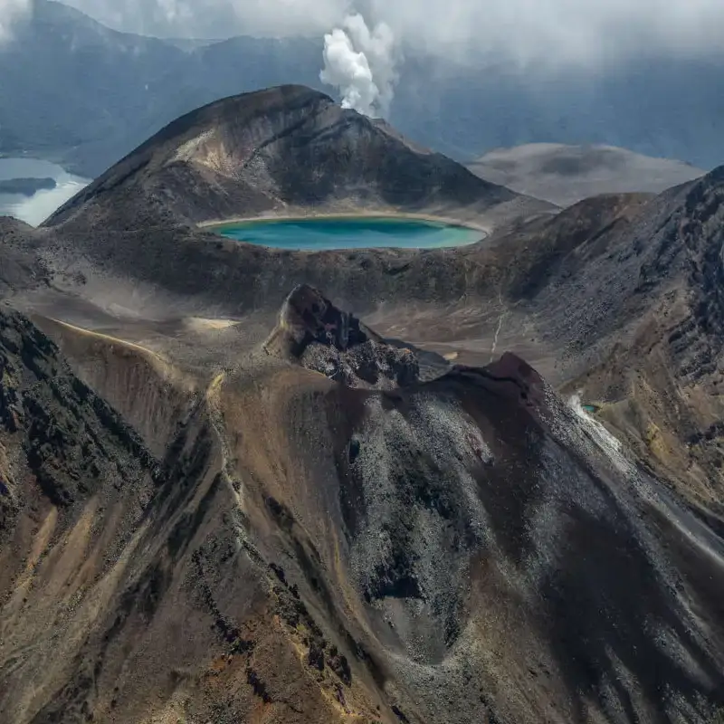
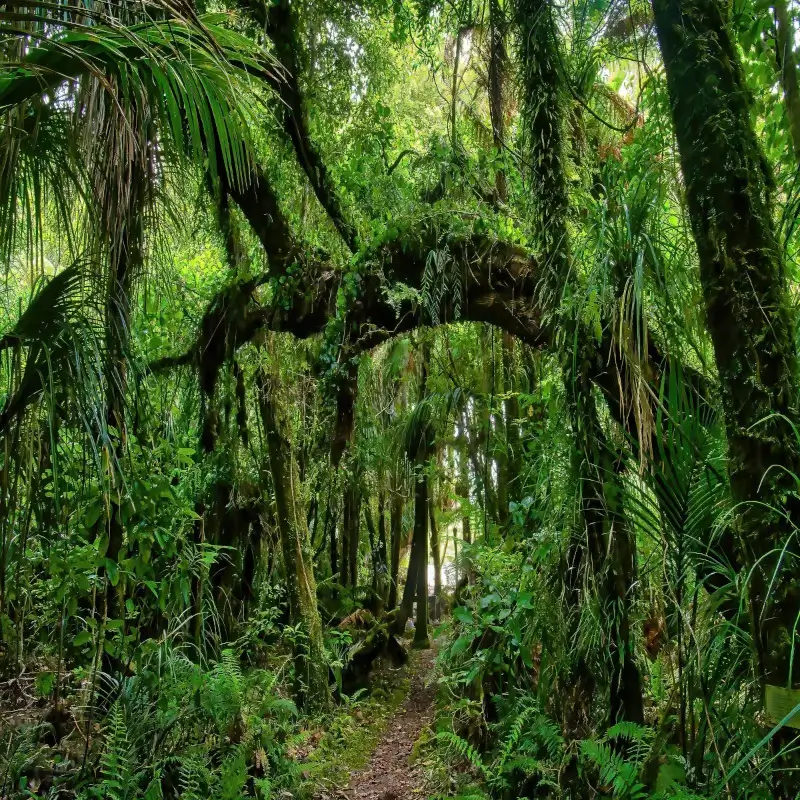
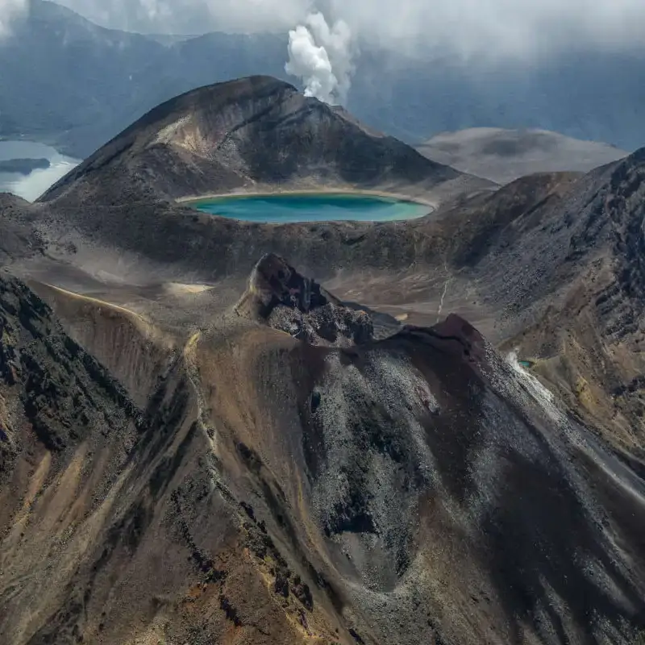
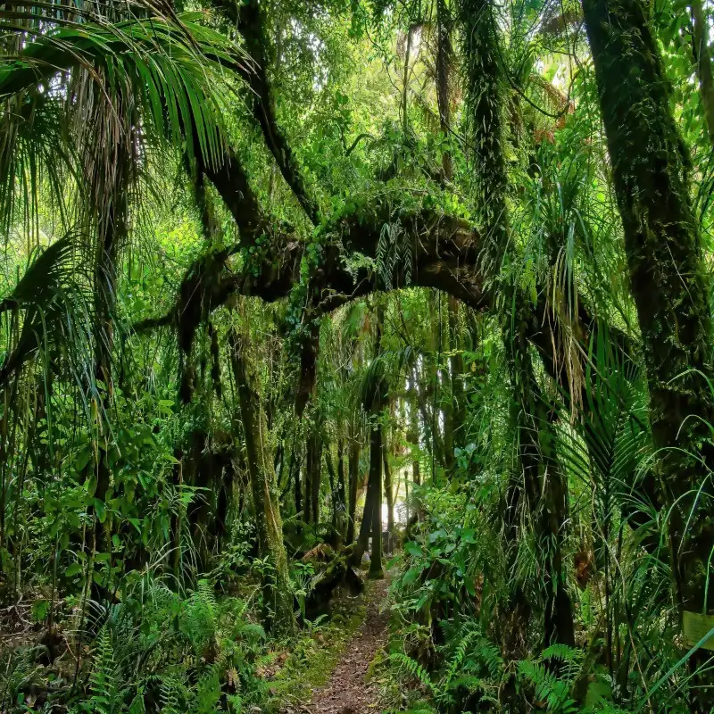

Australia
Costa, Ciudades y Naturaleza Salvaje (18 días de roadtrip)
Este itinerario combina algunas de las ciudades más vibrantes de Australia con una de las rutas costeras más espectaculares del mundo. Desde Sídney hasta Melbourne por la Great Ocean Road, entre playas, acantilados y parques naturales.
- 🌊 Great Ocean Road
- 🏙️ Sídney
- 🐨 Fauna salvaje
- 🚗 Roadtrip
 


